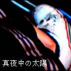

「ありがとうございました。」
高橋はマニュアル通りの言葉を口にしながら、店から出ていく客の背中を目で追う。ガラス越しに見える街は静まりかえっていて、時折大型トラックが音をたてて走り去ったかと思うとすぐに元の静寂が訪れる。
店内とは対称的に空はまだ暗い。
店内に人が居なくなったことを確認して、高橋はレジ奥へと足をむけた。品物が来る前に、出入口の掃除をしなくてはならないのだ。連日のように店の前でたむろする若者が飲み散らかしていく酒の空き缶や、煙草の吸い殻などの後片付け。コンビニの深夜シフトは慣れたものといえど、これだけは気分のいいものではない。
高橋は掃除用具を手に取ると、気だるさとよろしくしつつも裏口から外へと出る。扉を開けた瞬間に彼の頬を撫でるのは、冷房とも違う深夜独特の冷たい張りつめた空気。それに懐かしさを覚えた自分自身の心に高橋は苦笑した。
時が流れれば人は変わる。あれだけ必死になって取り組んでいた陸上も、今では楽しかったのかすら思い起こせない。
高校3年間続け習慣になりつつあった深夜のランニングも、忙しさにかまけて大学入学と同時にやめてしまっていた。
さぞ体力は落ちているだろうと、そんなことを考えながら、塵とりを引きずりつつ正面入り口へとまわった。
そこには黒いＴシャツに赤いジャージを穿いたショートカットの小柄な少女の姿があった。
高橋に背を向けて、灰皿の前にしゃがみこんで何やらごそごそと動いている。
「…あの、すみま……」
「ぎゃあっ…！！」
ぎゃあ、と色気の欠片もない化け物でも見たような声をあげて、少女は勢いよく立ち上がった。その途端、彼女の足下にばらばらと白いものが散らばる。見ると、それらは吸い殻だった。
「わっ………！！」
慌ててそれを拾おうとする少女に高階は、やるからいいよと一言かけ、箒で吸い殻を集めはじめる。
一人で吸うにはあまりに多い吸い殻の量。周囲のどこにも見当たらない空き缶。
それが指す事柄に気が付くと、高橋は居場所なさげに立ち尽くす少女に声をかけた。
「………片付けてくれてた？」
「あ、その………はい。なんか、いつもより散らかってて・・・勝手なことしてすみません。」
咎められると思ったのか少女はすみませんでした、と頭を下げる。
その行動に高橋は顔をあげると苦笑をしながら言った。
「や、むしろこっちが謝ることだし。あ…手、洗ってけば？」
汚れたっしょ、と言って箒を入り口に立てかけると高橋は少女を店内に招き入れた。
「あ、と………そっちだから。」
手洗い場の方を指差してそっけなく告げると、少女は軽く頷き高橋に背を向ける。少女の背中、黒字のＴシャツには白い文字で「We are RUNNER！桃花陸上部」と印刷されていた。
それを見た高橋は驚いたように一瞬動きを止めたが、すぐに口元に微笑みを浮かべると、カウンター内に戻りレジ横の保温棚から２００mlのペットボトルのお茶を取り出す。手に取ったペットボトルは、ほんのりと温かかった。慣れた手つきで会計を済ませまたカウンターの外に出ると、手を洗い終えた少女が丁度戻って来るところだった。
「コレ。」
それだけ言うと、高橋は少女にペットボトルを差し出す。困惑した表情を浮かべる少女に苦笑し、高橋は続けた。
「自主練の時間つぶしたお詫び。」
「え・・・？」
「・・・と、ゴミ片付けてくれたお礼。ホント助かったよ。なんかしないと気がすまないし、ほら。」
その言葉に少女は茶を受け取ると、ありがとうございますと言って笑った。
「・・・陸上、楽しい？」
ふと、口についた疑問。それは少女に対してというよりも、少女に重ねて見た自分自身への問いだった。少女は、突然の問いかけに驚いているようだった。
「あ、っと・・・ごめん。俺もさ、桃花の陸部だったから。Ｔシャツ見て、懐かしくなって。」
「そうだったんですか。突然だったから、ビックリしちゃって・・・。楽しいです。タイム中々でないけど・・・やっぱり走るの好きだから。すっごく、楽しいです。」
そう言って少女は笑った。その屈託のない笑顔に、高橋はいつかの自分の姿を見ていた。１年前、赤茶けたトラックを踏みしめていた頃の彼自身を。真白いゴールテープを切る瞬間に、自分はこんな顔をしていたのだろうか、と。それを考えると、もう一度走るのも悪くないかもしれない、と思った。芽生えた意識に少しだけ自嘲しつつ微笑むと高橋は言う。
「・・・そっか。っと、ひきとめてゴメン。ランニングもいいけど・・・まだ暗いから、気をつけて。」
「あ、はい。じゃあ、失礼します。お茶、ありがとうございました。」
そう言って店を出て行く少女の背を見送り、閉じるガラス扉の向こうの白み始めた空を見ながら、高橋は呟いた。
「・・・頑張れ、ルーキー。思い出させてくれて、ありがとう。」
数ヵ月後、２人が並んでランニングをしている姿が目撃されるようになるが、それはまた別の話。